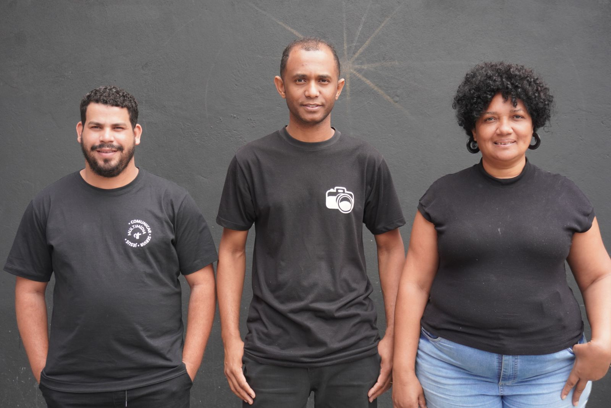

Ministério de Sonoplastia
Garantindo a clareza do som em nossos cultos e eventos.
A sonoplastia na igreja é um ministério. Ela trabalha nos bastidores para garantir que o foco permaneça onde deve estar: na mensagem de fé e na experiência de adoração. Investir em um bom trabalho de sonoplastia é investir no crescimento espiritual da sua comunidade.
A sonoplastia na igreja vai muito além de simplesmente amplificar o som. Ela é uma ferramenta essencial que, quando bem executada, proporciona uma experiência mais envolvente, clara e emocionante para a congregação.
Nossa Galeria de Fotos

Voluntário operando a mesa de som durante o culto.

Equipe de som e multimídia em ação nos bastidores.

Controle de projeção e slides para as letras dos louvores.

Ajustes técnicos antes do início da pregação.
Eventos da Semana
- Domingo: Operação de Som (08:00h e 18:00h- Sala de Controle)
- Quinta-feira: Culto (19:30h)
- Próximo Evento Especial: Treinamento para Voluntários de Som em [Data]! Saiba Mais
Conheça Nossos Líderes:

Rodrigo da Silva Francisco
Líder Sênior
Seja um Voluntário no Ministério de Sonoplastia!
Para mais informações sobre o Ministério de Sonoplastia, entre em contato conosco!
Fale Conosco Voltar para Ministérios